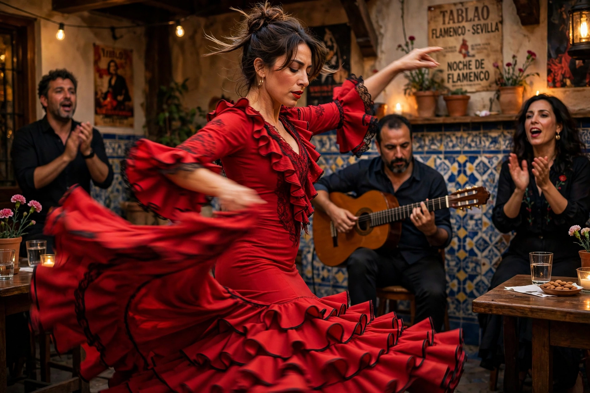

| Flamenco | |
| Medium | Music and dance |
|---|---|
| Originating culture | Andalusia, Spain (esp. Romani/Gitano communities) |
| Originating era | Late 18th–19th century |
| Elements | Cante (song), toque (guitar), baile (dance), palmas (handclaps) |
| UNESCO | Inscribed 2010, Representative List of the Intangible Cultural Heritage of Humanity |

Flamenco is an art form based on the musical traditions of southern Spain, above all Andalusia, developed over several centuries within the Gitano (Spanish Romani) subculture, with contributions from the region's other cultures. In 2010 UNESCO added flamenco to its Representative List of the Intangible Cultural Heritage of Humanity.
A flamenco performance combines four elements:
Flamenco songs are organised into forms called palos, defined by their rhythmic cycle (compás), mode and origin. Solemn palos such as the soleá and seguiriya contrast with festive ones such as bulerías and alegrías; twelve-beat cycles are characteristic of the deepest forms.
Flamenco emerged in the later 18th and 19th centuries among impoverished communities in cities such as Jerez de la Frontera, Cádiz and Seville, blending Romani, Moorish, Jewish and indigenous Andalusian influences. It moved from private gatherings to café cantantes in the 19th century, to theatres and dedicated tablaos in the 20th. Legendary performers include the singer Camarón de la Isla, the guitarist Paco de Lucía, who revolutionised flamenco guitar and fused it with jazz, and the dancer Carmen Amaya.